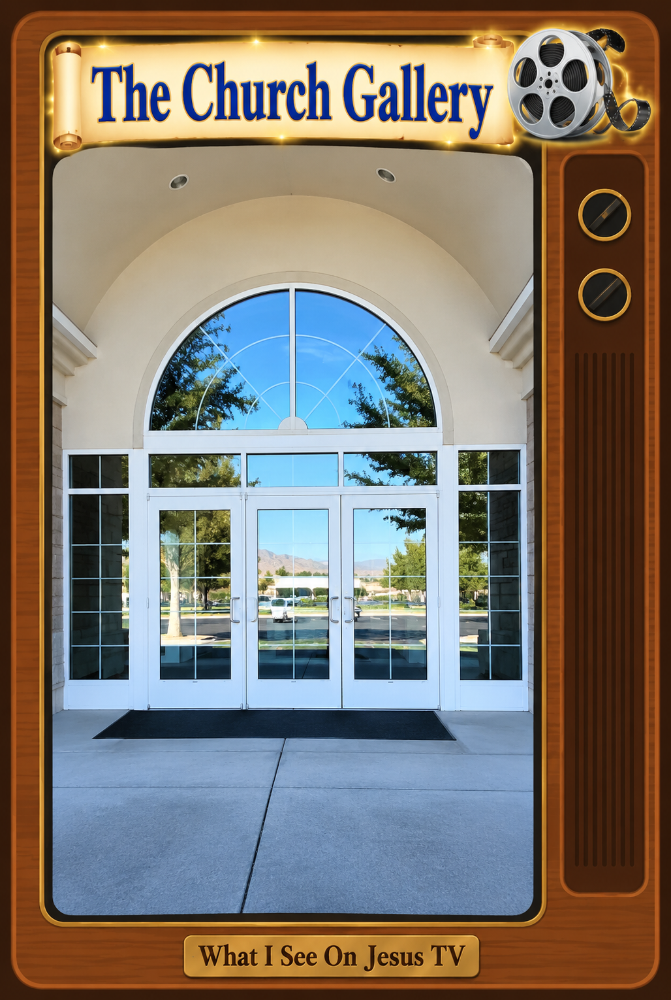

My Jesus-Greg WORLD · The MORE Jesus = More Reality Experiment
My Jesus-Greg WORLD Is Becoming a Gallery of Galleries
An evolving memory palace of ordinary life, sacred imagination,
art, and experiment.
I have been thinking about calling this new collection
The Church Gallery.
That little change in language helps me see something much larger
that may have been developing in My Jesus-Greg WORLD
all along.
Perhaps My Jesus-Greg WORLD is, among other things,
a gallery of galleries.
Or maybe it is closer to a memory palace—a
constructed world made up of places I repeatedly visit, with
images, objects, songs, stories, performances, and little movies
deliberately positioned there to help shape what I remember and
what I see.
The Church Gallery
The first gallery is becoming obvious.
I go to church every week. I see a chapel, people, pews,
sacrament trays, speakers, classrooms, hallways, paintings,
parking lots, and a steeple.
But increasingly, that isn't all I see.
Jesus is changing what I see when I go to church.
So I am beginning to make little animated pieces that approximate
what I see—or what I am learning to see—with my sacred imagination.
I can make the invisible part of my experience somewhat visible.
Then I can look at it again.
That last part matters.
I am not merely documenting a worldview after it has changed.
Making the art may be one of the mechanisms by which the
worldview changes.
I make the picture. I watch the picture. I remember the picture.
I return to the actual place. And now something from the picture
accompanies me.
That sounds remarkably like memory-palace technology.
The Galleries Were Already There
Once I saw The Church Gallery, I realized that
I probably don't need to invent most of the other galleries.
My ordinary life has already divided itself into them.
There is The Work Gallery: fences, tools,
work gloves, grant writing, handyman jobs, and
Heaven Can't Wait.
There is The Bedroom Gallery: waking, sleeping,
dreams, the Jesus Pillow, the Open Bible stretch, prayer,
Born Again, Womb/Tomb.
There is The Kitchen Gallery: bread, tables,
food, hunger, feeding people, the toaster.
There is The Bathroom Gallery: showering,
cleansing, cold water, singing, embodiment, humor, mortality,
even poop.
There is The Family Gallery and
The Friends Gallery.
There is The Music Gallery, where classic rock
songs are redeemed and become part of the soundtrack of another
world.
There is The Scripture Gallery, where Bible,
Book of Mormon, JGV, songs, stories, enactments, and newly written
pieces begin interacting with one another.
There is The Dream Gallery.
The Work Gallery. The Body Gallery. The Temple Gallery.
The Exodus Gallery. The Zion Gallery. The Outside Gallery.
The Jesus TV Gallery. The Jesus Radio Gallery.
And perhaps somewhere in the middle of all of them is
The Imagination Gallery—the gallery that helps
me notice what the other galleries are doing.
The WORLD Will Grow
The Gallery of Galleries
My galleries can have architecture, too.
A gallery is not merely a category on a website.
It is a place I can enter.
And inside a gallery can be rooms, chambers, exhibits,
images, sounds, memories, scenes, and doors leading
somewhere else.
So this becomes my Gallery of Galleries—a
growing directory of the places inside
My Jesus-Greg WORLD.
Some galleries are already populated. Some are only beginning
to take shape. Others are empty rooms waiting for life to happen.
GALLERY OF GALLERIES
My Jesus-Greg WORLD · An expanding memory palace

GALLERY 01
The Church Gallery
Chapels, pews, sacrament, paintings, signs, steeples,
Jesus TV, sacred imagination, and experiments in seeing
MORE Jesus in the places where I worship.
● Enter The Church Gallery
GALLERY 02
The Work Gallery
Tools, fences, work gloves, grant writing, handyman jobs,
service, and Heaven Can't Wait.
Waiting to be populated
GALLERY 03
The Bedroom Gallery
Waking, sleeping, dreams, prayer, the Jesus Pillow,
the Open Bible stretch, Born Again, and Womb/Tomb.
Waiting to be populated
GALLERY 04
The Kitchen Gallery
Bread, tables, food, hunger, feeding people, meals,
family rhythms, and the Jesus toaster.
Waiting to be populated
GALLERY 05
The Bathroom Gallery
Showering, cleansing, cold water, singing, embodiment,
humor, mortality, and the sacred possibilities of
extremely ordinary things.
Waiting to be populated
GALLERY 06
The Music Gallery
Redeemed classic rock, songs, soundtrack, performance,
memory, and the music of the opera that is my life
with MORE Jesus.
Waiting to be populated
GALLERY 07
The Scripture Gallery
Bible, Book of Mormon, JGV, Come Follow Me, selected
verses, stories, enactments, and scripture written
into lived experience.
Waiting to be populated
GALLERY 08
The Jesus TV Gallery
Little movies, animated GIFs, signs, magical billboards,
film reels, scenes, and approximations of
What I See On Jesus TV.
Waiting to be populated
GALLERY 09
The Zion Coalition Gallery
Zion, Babylon, Exodus, experiments, movements,
invitations, manifestos, art, and attempts to imagine
what inhabiting Zion might look like.
Waiting to be populated
GALLERY 10
Future Gallery
An empty gallery waiting for something from life,
Jesus, imagination, experiment, relationship,
or discovery to give it a name.
Waiting for life to happen
WORLD
→
GALLERY
→
ROOM
→
CHAMBER
→
EXHIBIT / SCENE
One place can contain another—and any exhibit can become
a doorway into somewhere else.
An Artist's Gallery—and a Scientist's Laboratory
The word gallery also helps me understand the peculiar
combination of artist and scientist that I am experimenting with.
An artist makes something so that something inside can become
visible outside.
A scientist experiments.
I am doing both.
I can ask:
What happens if I deliberately introduce MORE Jesus into
the representations through which I understand ordinary life?
Then I can make something.
Watch it.
Live with it.
Return to the real setting.
Notice what happens.
Make another version.
In that sense, these galleries aren't merely places where finished
art gets displayed. They are laboratories.
Every GIF, photograph, redeemed song, enactment, sign, room,
object, and little movie can become another experiment in:
The MORE Jesus = More Reality Experiment.
Curating Attention
This also helps me distinguish a gallery
from an archive.
An archive stores things.
A gallery asks me to look.
Someone chooses what goes on the wall. Someone decides where
it goes. Someone walks through the room, stops, looks again,
and perhaps sees something that wasn't visible before.
That is much closer to what I am trying to do.
I am curating my attention.
And because these galleries correspond to places I actually
inhabit—church, bedroom, kitchen, workplace, yard, road,
temple—the imaginary gallery and physical world can begin
overlapping.
I visit The Church Gallery on my computer.
Then I walk into the actual church.
The gallery comes with me.
A Memory Palace for MORE Jesus
So perhaps My Jesus-Greg WORLD can increasingly be
understood as a giant, evolving memory palace.
Not one I merely walk through in my head.
I can externalize it.
I can build parts of it in HTML. I can hang moving pictures
on its walls. I can make songs play in its rooms. I can create
signs over its doors. I can photograph its objects. I can enact
its scenes in my actual house and yard. I can revisit those
representations until they become increasingly available
to memory.
And the organizing question running through the entire palace
is wonderfully simple:
But soon the galleries will be filled with music, too—the
soundtrack to the opera that is my life with MORE Jesus—and
eventually, so much more.
What would I see here if I saw MORE Jesus?
Church becomes a gallery.
Work becomes a gallery.
My bedroom becomes a gallery.
The kitchen becomes a gallery.
My body becomes a gallery.
My dreams become a gallery.
Eventually, perhaps,
the whole day becomes the gallery.
And that may be one way of describing what My Jesus-Greg WORLD
has been trying to become all along:
an inhabitable collection of reminders—constructed by an
artist/scientist who is experimenting with MORE Jesus,
one ordinary scene at a time.